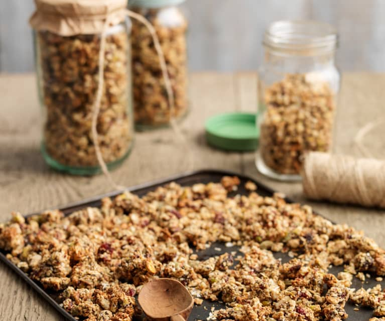

Healthy Granola Recipe

Granola
Now, after spicing things up with space cookies and eating this
delicious roquefort pasta, it is time for real dessert.
Please welcome the one and only, homemade granola!
Ingredients
- 4 cups old-fashioned rolled oats (use certified gluten-free oats for gluten-free granola)
- 1 ½ cup raw nuts and/or seeds (I used 1 cup pecans and ½ cup pepitas)
- 1 teaspoon fine-grain sea salt (if you’re using standard table salt, scale back to ¾ teaspoon)
- ½ teaspoon ground cinnamon
- ½ cup melted coconut oil or olive oil
- ½ cup maple syrup or honey
- 1 teaspoon vanilla extract
- ⅔ cup dried fruit, chopped if large
- Totally optional additional mix-ins: ½ cup chocolate chips or coconut flakes*